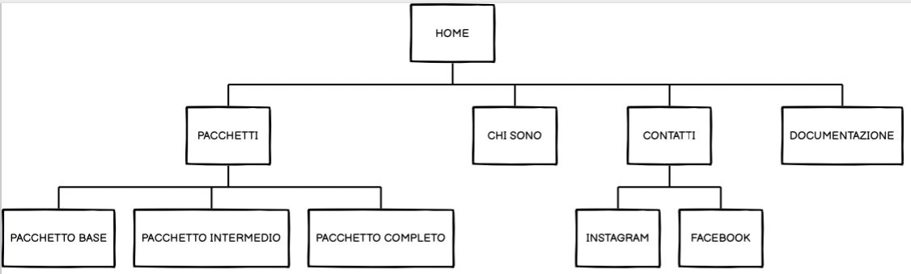
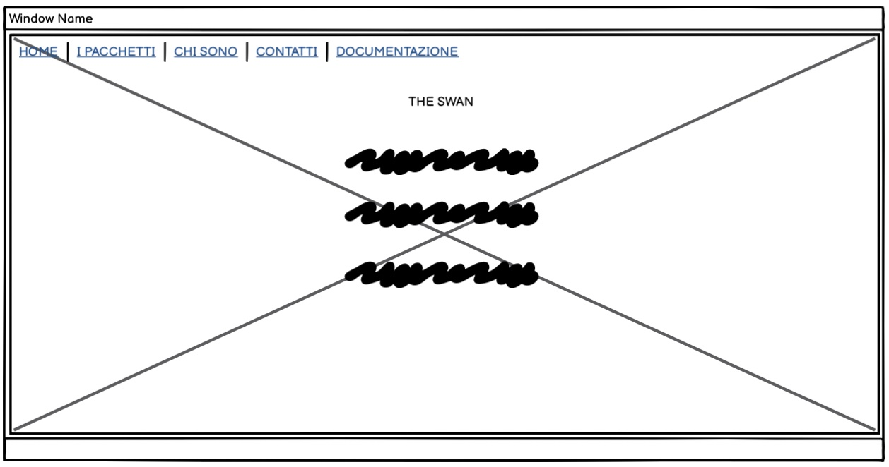
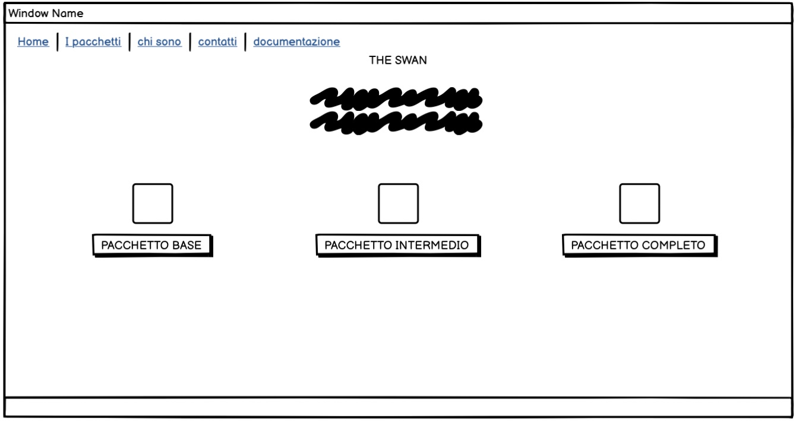
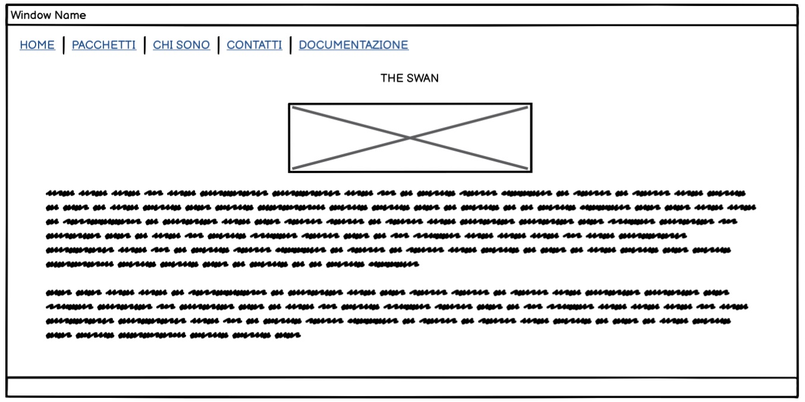
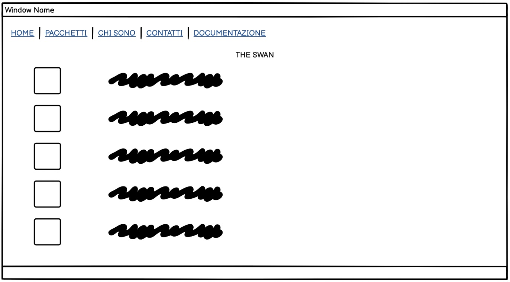
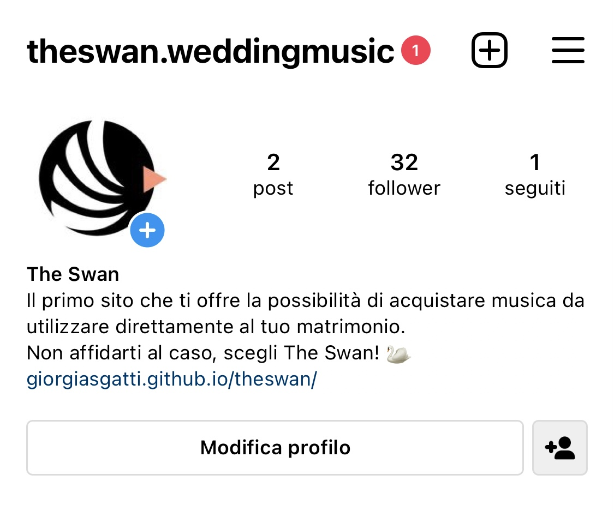
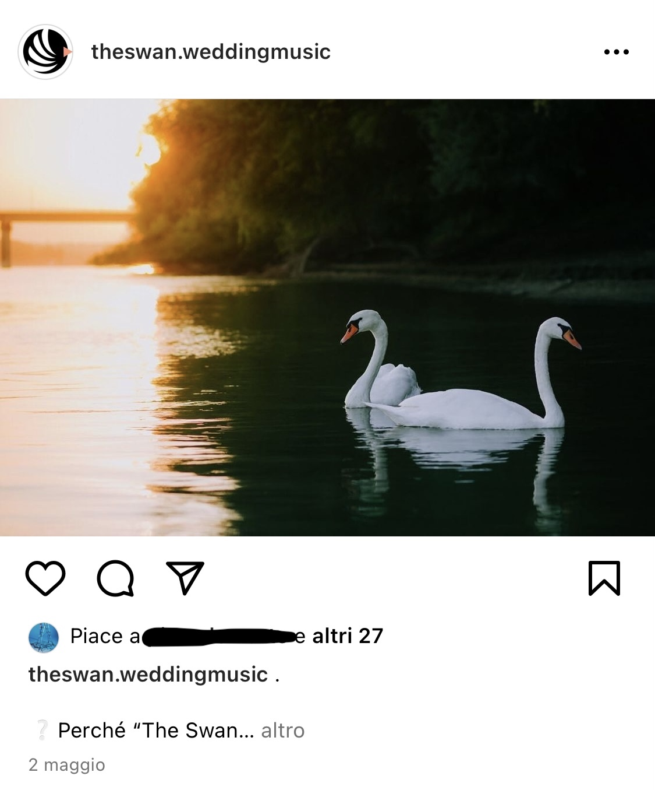
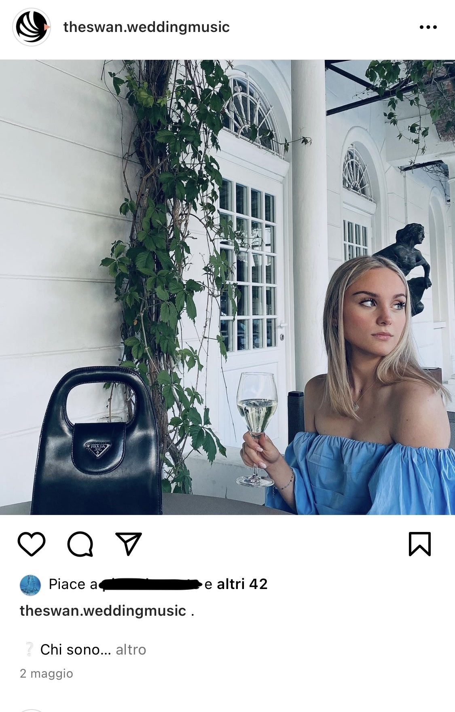

ABSTRACT
The Swan nasce per offrire alle persone, nel giorno del loro matrimonio, una sicurezza in più in ambito musicale;
Nel caso in cui volessero affidarsi ad una band, gli sposi, dovrebbero avere un piano B!
Il cantante potrebbe perdere la voce proprio nel giorno dell'esibizione.
Acquistando i pacchetti proposti dal sito, i clienti, invece,
avranno una soluzione su cui poter fare affidamento al 100%, nulla potrebbe andare storto.
PROJECT MANAGMENT PLAN
BENCH MARKING
OBIETTIVO:
offrire ai clienti una piattaforma che possa rendere il loro matrimonio privo di problemi dell'ultimo minuto.
TARGET:
il sito è principalmente indirizzato a coloro che vogliono coronare il loro amore, unendosi in matrimonio.
Tuttavia questo non impedisce ad altri consumatori di acquistare i pacchetti per altri scopi:
infatti il "pacchetto intermedio" e il "pacchetto completo" comprendono rispettivamente 5 o 10 playlist
oltre alle 5 contenenti melodie per la chiesa.
COMPETITORS:
Essendo The Swan il primo sito che propone questo tipo servizio non ho potuto attuare un confronto diretto;
tuttavia ho analizzato 2 competitors in particolare: le band con musica dal vivo e Spotify.
Le prime hanno sicuramente il vantaggio di creare maggiore coinvolgimento presenziando fisicamente,
ma ciò su cui il mio sito insiste ed emerge sono la comodità e l'affidabilità:
-la comodità di non dover cercare e confrontare band, stipulare un contratto, decidere le canzoni, e avere in un pacchetto
playlist con infinite canzoni e cantanti.
-la possibilità di affidarsi al 100% ad un servizio che non potrà apportare cambiamenti: sono i clienti a scegliere e decidere definitivamente a 360°.
Spotify invece permette di selezionare un'ampia scelta di playlist, sicuramente più ampia di quella offerta da The Swan!
Ma ciò che fa scegliere il mio sito rispetto a Spotify è, anche in questo caso, la comodità, il comfort:
su Spotify non si trovano playlist che riempiono l'intera giornata del matrimonio, dunque le persone dovrebbero creare playlist proprie e
perdere, chiaramente, tempo.
Questo con The Swan non succede poiché i pacchetti sono pensati apposta per quella giornata, comprendono tutto ciò che serve;
gli sposi non dovranno fare altro che selezionare il pacchetto che più si adatta a ciò che cercano e non utilizzare altro tempo al di fuori di quello.
STRUTTURA E LAYOUT
ARCHITETTURA SITO:
la struttura è ad albero.

WIREFRAME:




LOOK AND FEEL:
Nel sito ho voluto utilizzare 4 colori per avere uno stile tendenzialmente minimal;
tutti i colori sono di un tono neutro, ma caldo, per creare un clima di comfort e calorosità, nonchè due valori del sito stesso.
Per l'H1 (il titolo del sito), per il background in hover della navbar, per il bottone "acquista" dei pacchetti ho utilizzato "tan" #d2b48c.
Per il body e il background del bottone "acquista" dei pacchetti ho utilizzato "papayawhip" #ffefd5.
Per il colore in hover della navbar ho utilizzato "blanchedalmond" #ffebcd.
Lo sfondo è #a98769
LINGUAGGI
STRUMENTI:
Per la realizzazione del mio sito ho utilizzato linguaggi HTML e CSS.
Per le icone dei contatti e per i pacchetti ho utilizzato "Canva".
L'immagine del cigno che si trova nella pagina "home" è stata presa da google ed è protetta da licenza creative commons.
COMUNICATION STRATEGY
BACKGROUND:
The Swan è avantaggiato perché è il primo sito a proporre questo tipo di servizio,
con netti vantaggi sul piano della comodità anche rispetto ai suoi competitors Spotify e Band che offrono musica dal vivo.
OBIETTIVI COMUNICATIVI:
Il sito è molto semplice, intuitivo e dunque ergonomico.
Nella pagina "contatti", inoltre, le icone di instagram e facebook sono interattive (così come i pacchetti nella pagina dedicata)
e cliccandovi sopra si viene rimandati direttamente alle due rispettive pagine social: la prima del sito,
la seconda del mio profilo personale.
Ho voluto collegare al sito i due social per poter creare maggiore interazione con il cliente e fidelizzarlo.
OBIETTIVI:
- Raggiungimento di 20 like ad uno dei 2 post su instagram
- Raggiungimento di 10 follower alla pagina instagram
- Raggiungimento di 20 visite al sito
MESSAGGIO:
The Swan si pone a primo impatto come un sito accogliente e caloroso grazie ai suoi toni caldi;
Leggendo le prime righe della home il cliente è in grado di percepire la comodità e la sicurezza che questo sito offre.
PROMOZIONE:
La promozione del sito è avvenuta tramite passaparola a familiari, amici, amici di amici, e così via;
sponsorizzando in particolare la pagina instagram.
VALUTAZIONE DEI RISULTATI:
Gli obiettivi su Instagram sono stati raggiunti e hanno abbondantemente superato le mie aspettative, in particolare i like ai post!


